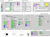

|  | Aubit 4gl architecture
design diagram (also in Visio
VSD format)
Tip: you can click on items in diagram, and they will take you to appropriate manual. |
Available documents: (Use top frame menu for quick access)
Libraries documentation:
On-line only documents:
For Aubit 4GL compiler developers:
External documents:
Some of this manuals are available for download as compressed archives from Aubit 4GL project page, and all are available from Aubit CVS. Hy4GL manuals are included in Hy4GL distribution/CVS, and all other manuals are in CVS under "aubit4gldoc" tree.
See Aubit CVS main page for instruction on downloading from CVS.
Please report documentation errors to Andrej Falout or to Aubit 4gl mailing list. We always appreciate offers of additional related documents, and translations. (Hint: we are still looking for a good 4gl programming tutorial)